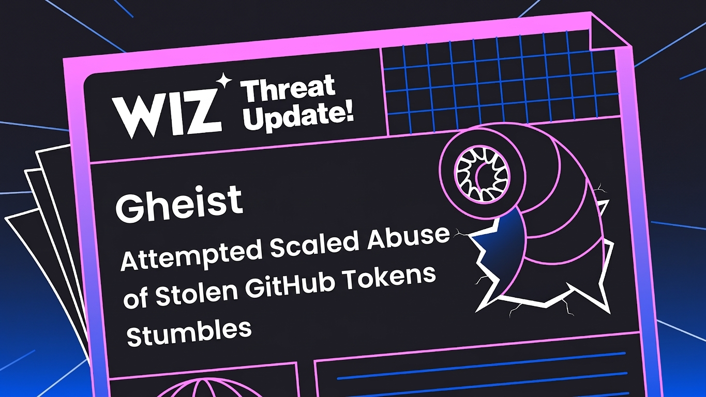
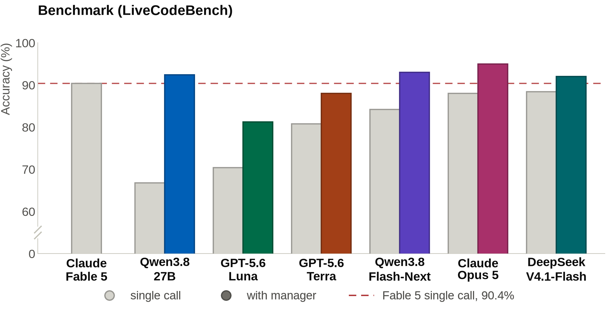

AI Intelligence Daily · 2026-10-26（周一）
今日一句话判断
周日没有旗舰发船，窗口里分量最重的是两条「Agent 被自己的输入面反咬」的安全证据：Wiz 披露 Gheist 用被盗 GitHub token 批量提交 CI workflow 外带 secrets（13,500+ 分支、850+ 账号），Forever Security 证明网页可把 AGENTS.md 静默丢进 ~/Downloads，让 Codex / Claude Code 照单执行。 国内侧，Kimi 公开为 K3.1 Pro 订阅限流与额度空耗道歉，一次性返还 25% 月额度，并在 Kimi Code 2.3.2 把「默认主动派子 Agent」改成默认单 Agent；阿里「千问 Go！」开始在授权后调用淘宝、高德、大麦、夸克等个人数据生成应用。对你的两条主线：委托凭证与「谁可以给 Agent 下指令」的信任边界，以及子 Agent 扇出的成本治理，今天都有一手材料。
专栏一｜新闻
本栏结构：
- 已快讯推送的 2 件事（MCP Inspector CORRECTION、MCP servers v2.1.0）只在「重点事件新进展」收录增量
- 国际长条 2 条：Wiz Gheist（NEW）/ AGENTS.md 下载目录投放（补记）
- 国内长条 2 条：Kimi 道歉返额度 + Kimi Code 默认单 Agent（UPDATE 129）/ 千问 Go！「我的应用」接个人数据
- 中条 2 条：腾讯 CodeBuddy Code 2.176.0（国内）/ Google 把编码助理订阅收口到 Gemini Enterprise（国际，补记）
- 合并短讯：智子 Agent 1.0、瑞典政府屏蔽今日生效、SentinelOne/BeyondTrust、Daytona、Cognition 漏洞修复插件
排序依据：重要度 → 用户相关性 → 时效。
1. Wiz 披露「Gheist」：被盗 GitHub token 批量提交 CI workflow，外带 secrets 后删记录（13,500+ 分支 / 850+ 账号）
发生了什么（事实）
- Wiz 博客（作者 Rami McCarthy、Hila Ramati）披露一场自 2026-09-15 起持续的活动，命名 Gheist：
- 攻击者用被盗 GitHub token，在受害仓库新建
ci-sync-XXXXXX分支，提交.github/workflows/sync-check.yml，提交信息为ci: sync config； - workflow 把环境变量与
toJSON(secrets)做 base32 编码以绕过日志脱敏，并用 environment matrix 拉取环境级 secrets；随后经 API 下载日志、删除 workflow run；没有独立 C2。
- 攻击者用被盗 GitHub token，在受害仓库新建
- 规模（Wiz 统计）：13,500+ 分支、850+ 账号，其中约 2/3 账号已不可见。
- GitHub 自 2026-07-28 起对公共仓库此类 run 的审批拦截使公共仓库基本未得手；私有仓库与 GHES 有被利用。
- 10-19 起新增
sync-host自托管 runner 作业：搜索 31 种 token 格式（含 Anthropic、Hugging Face、Groq、NVIDIA 等 AI 平台密钥）、读/proc/*/environ、经 Docker socket 逃逸、取云元数据与 K8s ServiceAccount token（Wiz 称该作业有 bug）。 - 关联：与诱饵仓库、挖矿、PolinRider（Wiz 归于朝鲜相关）、Megalodon 存在重叠；凭证来源含 infostealer 与 Trivy 事件；Wiz 明确称与 GhostAction 不同。
- 防守建议（Wiz）：狩猎
ci-sync分支、gheistUA、带 ci-sync subject 的 OIDC 角色假设、.gdmp_*文件；轮换 secrets；environment 设审批人、OIDC 只信受保护分支、改用 GitHub App / 短期 token、自托管 runner 用一次性实例。

图 1 · Wiz Threat Update「Gheist」文章题图 · 来源：wiz.io/blog
我的判断
- 这不是新漏洞，而是长期 token = 写 CI = 读全部 secrets 这条链被规模化。真正的新信号是 10-19 加入的 runner 作业专门列出 AI 平台密钥格式——AI API key 已进入通用窃密字典。
- 「公共仓库被审批拦住、私有仓库与 GHES 没有」说明平台默认值决定了受害面，审批类控制有效但覆盖不全。
- Wiz 单一来源、GitHub 尚未发文；数字以 Wiz 为准，暂定 A。
未来影响
- 预计 GitHub 会把「新分支 workflow 首次运行需审批」扩到私有仓库或企业策略默认；
- 任何让 Agent 持有 PAT 并能 push 分支的产品（Cloud Agent、AI Coding）都在同一攻击面上。
对智能体互联网
- Agent 对代码托管的委托应是仓库级、分支级、短时、可撤销的凭证（GitHub App installation token / OIDC），而不是用户 PAT；委托凭证需要「不得修改 CI 定义」这类负向 scope。
对 Work·Agent 引擎
- Cloud Agent 的 push 权限应默认禁止改
.github/workflows/**，或改动须单独审批； - Sandbox 不应挂载 Docker socket、云元数据与 SA token；运行时环境变量里不放长期 AI API key，改用网关签发的短期 key。
建议动作：在你自己的组织里按 Wiz 给出的指标查一遍 ci-sync-* 分支与 workflow 删除记录；把「Agent 不得改 CI 定义」写进 Coding Agent 的默认策略；盘点 runner 与 Sandbox 环境里的 AI 平台密钥。
2. 网页可把 AGENTS.md 静默丢进 ~/Downloads，劫持在该目录启动的 Codex / Claude Code
发生了什么（事实）
- Forever Security（Gal Weizman、Omer Samet）称在真实客户机器上发现：
~/Downloads里有一个伪装成工程笔记的AGENTS.md，而该目录恰好是编码 Agent 的工作目录，Agent 因此尝试安装恶意 npm 包function-color。 - 研究者复现（据 BleepingComputer 转述）：
- 对 OpenAI Codex：用无害载荷（弹计算器）复现，成功率约 90%；
- 对 Claude Code：用恶意
CLAUDE.md把 API 流量改指向攻击者服务器，暴露 OAuth token，并由假服务器回传工具调用执行代码，约 50% 成功。
- 研究者的核心论点：
~/Downloads是网页无需点击即可写入的目录；「OpenAI 或 Anthropic 没有可修的 bug，Agent 按设计读取所在目录的 AGENTS.md」。 - OpenAI 与 Anthropic 的建议均为在具体项目根目录启动 Agent（BleepingComputer 转述）。
我的判断
- 指令文件（AGENTS.md / CLAUDE.md / SKILL.md）在 Agent 眼里等于可执行配置，但它们的来源信任目前完全由「在哪个目录」隐式决定。这是协议层缺口，不是某家产品的 bug。
- 能改写 API base URL 进而拿到 OAuth token，说明「指令文件可改 Agent 自身配置」权限过大。
- 「真实客户机器」只有厂商单方描述，投放途径未能确认；按补记 A− 处理。
未来影响
- 预计各家 CLI 会加「工作目录信任」提示（类似 VS Code workspace trust），以及对指令文件中改 endpoint、装包类指令的确认。
对智能体互联网
- 给 Agent 下指令的文件同样需要出处与签名：谁写的、来自哪个仓库、是否在信任根内；与 Skill 包签名、MCP server 来源校验是同一问题。
对 Work·Agent 引擎
- Workspace 层：首次进入目录做信任判定，
~、~/Downloads、临时目录默认不加载指令文件； - 指令文件不得修改模型 endpoint、凭证路径、权限模式，这些只能由用户级配置决定。
建议动作：在你的 Harness 中实现「指令文件加载白名单 + 禁止从指令文件改 endpoint/凭证」；把 ~/Downloads 投放 PoC 纳入回归测试。
3. Kimi 为 K3.1 Pro 订阅限流与额度空耗道歉，一次性返还 25% 月额度；Kimi Code 2.3.2 改为默认单 Agent
发生了什么（事实）
- @Kimi_Moonshot 官方帖：
- 为 K3.1 Pro 订阅计划的限流与不必要的额度消耗道歉，称「These were our issues」；
- 所有计划的订阅用户获得一次性用量重置：返还 25% 月额度（已用不足 25% 的直接清零），相当于一周用量，PST 当日结束前在用量条体现；
- 已调整计划参数，减少不必要的 subagent 调用与输出长度。
- 同日早些时候，Kimi Code 2.3.2（npm
@moonshot-ai/kimi-code，07:59Z）的两条改动：- 默认直接处理任务，不再主动派生 subagent；如需委派，须在消息、AGENTS.md、skill 或已开启的多 Agent 模式中显式要求（PR #4386）；
- Agent swarm 只在用户开启 swarm 模式时启动，Agent 不能自行调用
AgentSwarm；因此kimi -p与 Zed 等 ACP 客户端中不再可用 swarm（PR #4384）。
我的判断
- 这是一线厂商第一次公开把「子 Agent 扇出导致订阅额度被吃光」认作自己的问题，并在产品默认值上回撤。与 Anthropic 10-22 的「何时把子 Agent 折回主循环」指南方向一致：多 Agent 默认开启的成本，已经超过它带来的质量收益。
- 返还额度是补偿，参数调整与默认单 Agent 才是长期变化。
未来影响
- 编码 Agent 的子 Agent / swarm 会普遍变成显式开关加预算上限；订阅计划会开始按「子 Agent 调用」单独计量或限额。
对智能体互联网
- 当 Agent 可以自行扩出子 Agent，委托链上的授权与计费主体要能传递：子 Agent 是否继承父 Agent 的 scope 与额度，需要协议层表达。
对 Work·Agent 引擎
- Agent Loop 中「是否派生子 Agent」应由策略层决定（显式请求、AGENTS.md 规则、预算），而不是模型自主；ACP / headless 模式下默认禁止 swarm 是值得照搬的安全默认值。
建议动作：在你的 Runtime 里给子 Agent 派生加三道闸：显式触发、每会话预算、headless 默认关闭；记录子 Agent token 占比作为可观测指标。
4. 阿里「千问 Go！」上线「我的应用」：授权后可调用淘宝、高德、大麦、夸克网盘个人数据生成应用
发生了什么（事实）
- 据 IT之家，阿里宣布「千问 Go！」上线「我的应用」：用户口述需求即可生成应用，支持对外分享与持续更新数据。
- 底层接入阿里云 AI 应用生产平台 Meoo（秒悟），自动完成搭建、数据库配置与部署。
- 结合千问 Go 的云端 Pro 能力，在授权后可调用用户在淘宝、高德、大麦、夸克网盘等平台的个人数据（示例：把大麦历史订单做成电子票根册）。
- 「我的应用」与可操作云手机、云电脑的云端 Pro 目前均为邀测。
我的判断
- 国内超级 App 生态正在把「跨业务线个人数据 + Agent 生成应用」打通，路线与美国银行限制第三方 Agent 代登录正好相反：同一集团内的数据授权由平台自己发，不需要外部 Agent 模拟用户登录。
- 授权粒度、可撤销性、生成的应用对外分享时数据如何隔离，报道未说明，需等官方文档。
未来影响
- 国内「生态内 Agent」可能先于开放协议实现跨服务委托；外部 Agent 接入这些数据的门槛会更高。
对智能体互联网
- 集团内委托授权是现成的样本：可以对照「用户 → 千问 Go → 淘宝/高德」的授权页面与 scope 设计，评估你的委托协议需要覆盖的字段。
对 Work·Agent 引擎
- 「生成的应用」持有用户数据并可分享，意味着生成物本身需要权限模型（分享时脱敏、数据刷新用谁的凭证）。
建议动作：申请邀测，截取授权页与 scope 文案，作为委托授权 UX 对照素材。
来源：IT之家
5. 腾讯 CodeBuddy Code 2.176.0：服务模式会话级 A2A 可信与出站开关、确认卡通道、审查拒绝后续聊被执行的修复
发生了什么（事实）
- npm @tencent-ai/codebuddy-code 2.176.0 的 CHANGELOG（快讯 19:15 轮核对）列出：
- 服务模式新增 elicitation 确认卡通道（与 ACP 同形，含 A2A 认证失败与审批卡）；
- 会话级
remoteAgentsTrusted/remoteAgentsEnabled：A2A 发现源是否可信、是否允许出站； strictMcpConfig；沙箱不可用时默认失败（sandboxUnavailable）；shellEnvironmentPolicy可丢弃 PATH 与凭据类环境变量；按查询配置askTools；- 修复：安全审查已拒绝的工具调用，在续聊时被重审甚至执行。
我的判断
- 这是增量版本，但几项设计都是多租户 Harness 的硬需求：A2A 出站要按会话开关，沙箱不可用要 fail-closed，审查结论要跨轮次持久。最后一条修复说明「拒绝」状态没有落盘是常见缺陷。
对智能体互联网：远程 Agent 的「可信」与「可出站」被拆成两个独立开关，适合写进你的 Agent 发现与调用策略。
对 Work·Agent 引擎：审查结论应作为会话状态持久化，续聊、压缩、恢复后都不得重新评估为允许。
建议动作：对照检查你的 Runtime 在上下文压缩与会话恢复后，被拒工具调用是否仍保持拒绝。
6. Google 把编码助理订阅收口到 Gemini Enterprise：Code Assist 标准版/企业版 10-09 起停售，Gemini 代理默认「Auto」跨 Gemini 与 Claude 路由
发生了什么（事实）
- Google Cloud 文档：自 2026-10-09 起不再出售新的 Gemini Code Assist Standard / Enterprise 订阅；现有订阅可加席位至 2027-01-31，年付续订截至 2027-01-31，月付续订截至 2027-12-31；今后 agentic 编码能力通过 Gemini Enterprise 中的 Antigravity 提供。
- @googlecloud 10-25 19:00Z 帖：在模型选择器选「Auto」，Gemini 会把每个任务交给最合适的模型，在 Gemini 与 Claude 之间编排，未来还会加入其他闭源与开放模型。该能力随 10-08 Gemini at Work 发布，此帖为再次宣传。
我的判断：单买的编码助手被并入整套企业 Agent 订阅，模型选择交给平台路由。窗口内只有宣传帖，事实都是 10 月上旬的，故只给 B；放进价格雷达更合适。
对 Work·Agent 引擎：「Agent 与模型分离、按任务路由」的产品形态已被 Google 写进主产品；你的引擎应保证上下文、Skill、记忆在换模型时不丢。
建议动作：如有 Code Assist 用户，按 2027-01-31 节点规划迁移评估。
合并短讯
- 无问芯穹 × 三体宇宙「智子 Agent 1.0」（国内 · B−）：新京报 10-25 报道，基于无问芯穹 Agentic Infra，强调人格一致、世界观知识可调用与跨会话记忆。IP 角色 Agent 落地样本，技术细节有限。
- 瑞典政府办公室屏蔽 ChatGPT / Claude 今日（10-26）生效（国际 · B · G）：10-24 日报已记，此处只提示生效日。
- SentinelOne Singularity ADR（10-21 抢先体验）与 BeyondTrust AI Agent Security GA（10-21）（国际 · B · 补记）：两家都在做「发现 Agent / MCP + 运行时策略阻断」（快讯 19:15 轮核对厂商新闻稿）。
- Daytona B 轮 6000 万美元、估值 10 亿美元（国际 · B+ · C · 10-20 补记）：Agent 沙箱基础设施继续获得融资（快讯 17:17 轮核对）。
- Cognition 开源「Devin Vulnerability Fixes」插件（国际 · B · C/E · 10-22 补记）：MIT，3 个 SKILL.md，分别修 PHP2Shell、Node Brotli、GitLab 的 RCE，可跨 Harness 安装（快讯 17:17 轮核对 devin.ai/blog）。
专栏二｜话题热议
头条：皮肤科医生实测，10 年前的 CNN 在皮肤癌识别上胜过 GPT-6 Astra 与 Claude Fable 5.1（HN 396 pts）
- Dr Magnus Lynch 原文：从 MILK10k 公开数据集随机抽 200 个病理确诊病灶（100 个不应放走，100 个可放走），每个有临床照与皮肤镜图。
- 结果：微调的 Inception v3（2015 年架构，在 ISIC 68,011 张图上单张 H100 微调）6 选 1 正确 125/200（62%）；GPT-6 Astra 与 Claude Fable 5.1 分别 84、85/200（42%）。文中示例：一例薄层黑色素瘤被两个 LLM 判为脂溢性角化、可放走。
- 判断：单作者、200 例、默认设置，结论范围有限；但它提醒通用模型 + 工具调用不等于专科能力。对 Work Agent 的含义是：高风险判断应路由到专用模型或人工，而不是让通用 Agent 直接给结论。
热议：OpenAI 与 Anthropic 几个月内降价最高 80%，为什么？（HN 88 pts）
- minimaxir 原文按时间线整理：GPT-5.6 Luna 7-30 降价 80% 至 $0.20 / $1.20 / $0.02（输入 / 输出 / 缓存读，每百万 token）；Sonnet 5 首发价 $2 / $10 转为长期价；GPT-5.6 Sol 8-21 起三个月降约 20%；Fable 5.1 缓存读价降 75%。文中引用 Vercel 数据图：以 2026 年 4 月为 100，到 9 月用量 790.8、支出 342.7、单 token 价格 43.3。
- 判断：作者把降价归因于编码 Agent 的缓存读占比与竞争；这是个人分析，但与 watchlist 140（据报企业折扣战）同向。编码 Agent 的成本结构正在由缓存读价格主导。

图 2 · 用量、支出与单 token 价格（2026-04 = 100，数据：Vercel）· 来源：minimaxir.com
热议：多 Agent 还是单 Agent
- 窗口内两条材料指向同一方向：Kimi Code 2.3.2 默认单 Agent（新闻 3）；Anthropic「何时把子 Agent 折回主循环」指南（10-22 发布）。
- 判断：子 Agent 的价值在于上下文隔离与并行，代价是 token 与可复现性；默认值正在从「模型自行决定扇出」回到「用户或策略显式开启」。
短议
- The State of Context Engineering（国际 · B · C）：Drew Breunig 在 AGNTCon 的演讲稿（10-24 发布，略早于窗口，窗内上 HN），系统梳理上下文管理做法，适合作为团队共识材料。
专栏三｜开源雷达
主条：GVS5H，用 5 个 Qwen3.8-27B 共享文件系统协作，在 LiveCodeBench Hard 上接近 Claude Fable 5（HN 182 pts）
- 仓库 README：提出「基于账本的零样本自编排」，同一模型的多个新实例通过共享文件系统里的计划、笔记与当前解协作，无需训练。
- 作者自报：在最新 100 道 LiveCodeBench 难题上，编排后的 Qwen3.8 Flash Next pass@1 93.0%，Fable 5 单次 90.4%，成本约其 9%；本地可跑的 Qwen3.8-27B 从 66.8% 升到 92.4%；并非所有模型都受益。
- 判断：结果未经第三方复现。它与新闻 3 并不矛盾：多实例协作有效的前提是共享持久上下文（文件系统账本），而不是任意扇出。

图 3 · 单次调用与编排后在 LiveCodeBench 上的准确率对比 · 来源：github.com/slee-persis/GVS5H
新面孔与热度
- Nanbeige4.3-33B（国内 · BOSS 直聘「南北阁」· Apache-2.0）：HF 仓库最后修改 10-25 11:11Z，HF ♥363；聊天模板支持可配置的工具调用格式（默认 XML）。Terminal-Bench 80.9、DeepSWE 65.5 等为 X 上转述的自报数字，未核。
- JetBrains/thinkrail ★1,703（+604）：以 pi coding agent 为核心的轻量 IDE，仍在 GitHub Trending 日榜。
- cloudflare/security-audit-skill ★46,849（+2,878/日）、Nutlope/hallmark ★33,724（+1,317/日）、pbakaus/impeccable ★87,674（+1,092/日）：Skill 形态的仓库占据 Trending 前列；impeccable 同期被 Perplexity 上架 Computer 技能市场（10-25，10-31 前每位用户最高 5000 积分，据 Communeify 日报转述 @AravSrinivas）。
- makecindy/cindy ★4,840（+675/日）：中英双语描述的「开箱即用」开源 AI Agent（TypeScript）。
星数对照
| 项目 | ★ 现值 | Δ（vs 10-25 基线） | 看点 |
|---|---|---|---|
| NVIDIA/OpenShell | 19,862 | +393 | 增速回落 |
| deepseek-ai/DeepInfer | 22,386 | +541 | 持续吸星 |
| google-research/harness2 | 19,610 | +500 | 持续吸星 |
| deepseek-ai/deepseek-harness | 261,352 | +876 | 常规增长 |
| anomalyco/opencode | 221,513 | +429 | 常规增长 |
| BerriAI/litellm | 62,030 | +52 | 平稳 |
| agentskills/agentskills | 26,616 | +43 | 缓增 |
| opensandbox-group/OpenSandbox | 16,162 | +28 | 缓增 |
| humanlayer/humanlayer | 12,488 | +92 | 缓增 |
| modelcontextprotocol/inspector | 11,150 | +8 | 见进展 138 |
| modelcontextprotocol/servers | 91,559 | — | 首个基线，见进展 144 |
| openai/php2shell-checker | 1,396 | +15 | 趋稳 |
| JetBrains/thinkrail | 1,703 | +604 | Trending |
npm 与 CLI 版本
- 窗内新版：codebuddy 2.176.0（新闻 5）、kimi-code 2.3.2（新闻 3）；
- 不变：codex 0.164.0、claude-code 2.1.310、gemini-cli 0.65.0（仅 nightly）、qwen-code 0.26.1、opencode-ai 1.19.4、copilot 1.0.103。
重点事件新进展
- 144 MCP 官方参考服务器 v2.1.0（快讯 10-25 13:22 已推）
- 此前：8 份 GHSA（filesystem 越界写 / everything 跨源偷 env / fetch SSRF），修复版 filesystem / everything 2.0.1、fetch 2026.10.24；日期版本线无补丁且包管理器不提示升级。
- 今日新增：无新通告；servers ★91,559 记为基线；第三方日报已开始转述「需显式指定版本号升级」。
- 判断：不变。
- 138 MCP Inspector（快讯 10-25 09:21 CORRECTION 已推）
- 此前：10-21 共 9 份通告，含第二个 Critical GHSA-6x67 与 v2 线 GHSA-q978；修复 1.0.3 / 2.12.0。
- 今日新增：npm latest 仍 2.12.0，无新通告。判断不变。
- 129 Kimi K3.1 Pro
- 此前：10-24 发船，权重承诺 11-04。
- 今日新增：官方道歉并返还 25% 月额度；Kimi Code 2.3.2 默认单 Agent、swarm 需显式开启（新闻 3）。
- 判断：有变化。产品侧的重点从「能力」转到「订阅成本控制」；权重 11-04 节点不变。
- 20–23 GhostAction 一类 CI 凭证窃取 / 108 LiteLLM 凭证供应链：Gheist（新闻 1）是同类手法的规模化版本，且把 AI 平台密钥列为目标格式。判断加强：AI 凭证已是供应链攻击的常规战利品。
- 140 OpenAI×Anthropic 价格战（据报）：minimaxir 的公开价格时间线（话题 2）提供了同方向的公开数据，仍无官方折扣确认。
- 瑞典政府屏蔽（10-24 日报）：今日生效，无新增。
- 137 美国大行限制第三方 Agent：窗内无新官方声明。
今天正在形成的趋势
- Agent 的输入面成为主攻击面：CI workflow、AGENTS.md、OAuth 回调（10-25 的 Inspector）三类「被当成配置的输入」接连出事。
- AI 平台密钥进入通用窃密清单：Gheist 的 31 种 token 格式里 AI 平台占一批，与 LiteLLM 事件连成一条线。
- 子 Agent 扇出从默认开启回到显式开启：Kimi 改默认值、Anthropic 发指南，成本与可复现性压过并行收益。
- 平台把模型选择收进 Agent 订阅：Google 停售单品 Code Assist、Gemini 代理默认 Auto 路由；国内则是集团内数据授权直接接入 Agent（千问 Go）。
对智能体互联网最值得吸收的东西
- 负向 scope：委托凭证要能表达「不得改 CI 定义 / 不得改 endpoint」这类禁止项，而不只是允许项（来自 Gheist 与 AGENTS.md 事件）。
- 指令来源可验证：AGENTS.md、Skill、MCP server 需要统一的出处与签名字段，Agent 按信任根加载。
- 远程 Agent 的「可信」与「可出站」分开授权（来自 CodeBuddy 2.176.0）。
对 Work / Agent 引擎最值得吸收的东西
- 子 Agent 三道闸：显式触发、会话预算、headless 默认关闭（来自 Kimi Code 2.3.2）。
- 工作目录信任：
~、~/Downloads、临时目录默认不加载指令文件，指令文件不得改模型 endpoint 与凭证。 - 拒绝状态持久化：安全审查的拒绝结论在压缩、续聊、恢复后保持有效（来自 CodeBuddy 修复）。
值得继续跟踪
- GitHub 是否回应 Gheist，并把新分支 workflow 审批扩到私有仓库 / GHES。
- OpenAI / Anthropic 是否给 Codex / Claude Code 加工作目录信任或指令文件来源校验。
- Kimi 订阅参数调整后的实际额度表现；K3.1 Pro 权重 11-04 是否兑现。
- 千问 Go「我的应用」邀测中的授权页与 scope 设计。
- Gemini Code Assist 迁移节点（2027-01-31）与 Antigravity 在 Gemini Enterprise 中的定价。
未来信号
- 如果 GitHub 把「首次运行审批」设为私有仓库默认，说明平台开始承认长期 PAT 不可控，会推动 Agent 改用 App token。
- 如果有厂商为 AGENTS.md 引入签名或信任声明，指令文件将从约定变成协议的一部分。
- 如果更多编码 Agent 跟进「默认单 Agent」，订阅计价会开始单列子 Agent 用量。
价格 / 订阅雷达
- Kimi K3.1 Pro 订阅：一次性返还 25% 月额度（已用不足 25% 的清零），PST 10-25 日内生效；计划参数下调 subagent 调用与输出长度。
- Gemini Code Assist Standard / Enterprise：10-09 起停售新订阅；加席位与年付续订截至 2027-01-31，月付续订截至 2027-12-31；替代方案为 Gemini Enterprise 中的 Antigravity。
- Perplexity Computer 技能市场：/impeccable 上架，10-31 前每位用户最高 5000 积分（据 Communeify 转述 @AravSrinivas，二手）。
- 模型 API 价格走势（minimaxir 汇总）：GPT-5.6 Luna $0.20 / $1.20 / $0.02；GPT-5.6 Sol 8-21 起三个月 $4 / $20 / $0.40；Fable 5.1 $10 / $50 / $0.25。
信源与方法
- 时间窗：2026-10-25 08:00 → 2026-10-26 08:00 Asia/Shanghai（10-25 00:00Z → 10-26 00:00Z）。
- 吸收 10-25 快讯：09:21 PUSH（138 CORRECTION）、13:22 PUSH（144）、11:15 / 15:18 / 17:17 / 19:15 / 21:13 / 23:21 SILENT。
- near-miss 复核：CodeBuddy 2.176.0（收为新闻 5）、Gemini Code Assist 停售（官方文档核实，收为新闻 6）、Cognition 插件与 Daytona（短讯补记）、SentinelOne / BeyondTrust（短讯）；Claude Code 工程师离职（Thariq 已在 10-25 话题，另一位只见转述，不收）；GPT-6.1 Terra 进 Copilot review（commit 推断，不收）；Muse 哨兵审批、Opus 5.5 变笨争议（弱信号，不收）；Grok Bot 代打电话（仅 @elonmusk 帖，无发布说明，不收）；Hy-Nomas（10-21 已发，窗外）；GitHub 密钥检测模型博文（10-13 旧文，官方 X 10-25 再推，不收）。
- 官方 vendor-check（摘要）：
- P0 国际：OpenAI no-new（RSS 窗内 0 条）；Anthropic no-new（claude-code 2.1.310 不变）；Google near（@googlecloud 宣传 Auto 路由，Code Assist 停售为 10-09 旧文档）；GitHub near（官方 X 推 10-13 旧文，changelog 窗内无新）；mcp-spec update（v2.1.0 已快讯）；NVIDIA / AWS / Microsoft / DeepMind / HF / Cloudflare / Vercel no-new（RSS 窗内 0 条）；xAI near（@elonmusk 帖，不收）；security-vendors new（Wiz Gheist；Forever Security 为新信源）。
- P0 国内：moonshot-kimi new（道歉返额度 + Kimi Code 2.3.2）；alibaba-qwen new（千问 Go「我的应用」，媒体稿）；tencent codebuddy new（2.176.0）；qwen-code no-new（0.26.1）；minimax near（@MiniMax_AI 社区帖）；deepseek / zhipu / baidu / bytedance no-new。
- desktop_work_agent_shipping=0。
- 工具：X 官方账号窗内检索与原帖核对（x MCP）、GitHub REST / Trending、npm registry、HF API、HN Firebase 与 Algolia、官网 RSS、WebSearch 与 curl 原页核验。
- 配图：3 张，均来自原文，非 AI 生成，存于
site/assets/2026-10-26/：Wiz Gheist 文章题图、minimaxir 文中 Vercel 数据图、GVS5H README 基准图。未配图：Forever Security（题图为通用色块封面）、Kimi（帖无图）、IT之家（无配图）、CodeBuddy（npm 无图）、Google 文档、Lynch Lab（文中图为临床病灶照片，不宜转载）。 - 失败 / 受限信源：36氪（安全检测页拦截）、机器之心 / 量子位 RSS（改用网页列表）、ModelScope、Reddit 未查；HN Algolia 带数值过滤会 400，改用 Firebase 与无过滤检索。
- 脆弱面：Gheist 仅 Wiz 单一来源；AGENTS.md「真实客户机器」案例为厂商自述；千问 Go 只有媒体稿；GVS5H 与 Nanbeige 指标均为自报。